Getting started with the Analog Discovery Pro 2230
1. Hardware
To set up the ADP2230:
- First, install the Digilent WaveForms software on your PC. See Installer Details for more information.
- Connect the ADP2230 to your PC using a USB cable and optional connect 5 V DC auxiliary supply.
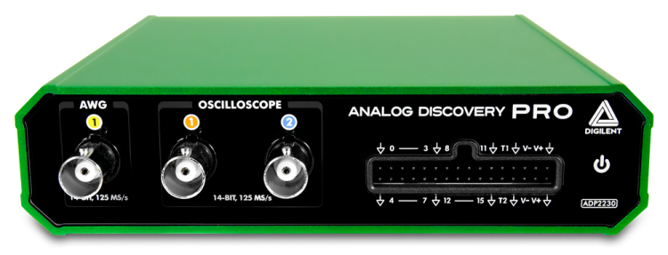
| |
Recommended operating conditions |
Absolute ratings |
| Oscilloscope (1,2) |
50 V peak2peak, 1MΩ|24pF |
±50 V |
| Wavegen (AWG 1) |
±5 V, ≤30 mA, 50Ω |
±10 V, 40 mA |
| Power Supplies (V+,V-) |
0.5 ... 5 V, -0.5 ... -5 V, 0.8A/channel |
+6 V, -6 V, 1.6A/channel |
| Voltage Readback |
-15V ... +15V |
-15V ... +15V |
| USB powered |
0.6W-5.5W total |
depends on PD |
| Auxiliary powered |
10W total |
15W total |
| Digital IOs, Triggers (T1,T2,0,1...15) |
LVCMOS 3.3 V, 4-16 mA, slow-fast |
± 20 V |
| USB Supply |
5V, 0.9 ... 3A |
4.5V ... 5.5V |
| Auxiliary Supply (5VDC) |
5V, 4A, 20W |
4.5V ... 5.5V, 3.1A, 15.5W |
For more information visit the ADP2230 reference page.
2. Software
See Installer Details for information on installing WaveForms.
See WaveForms for information on using the
software.
2.1 System Frequency
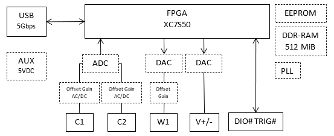
The system clock is adjustable between 50 and 125MHz. This will be the base frequency used for Oscilloscope, Wavegen, Logic Analyzer and Pattern Generator. Each instrument or channel rate will be derived from this frequency.
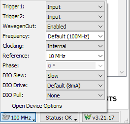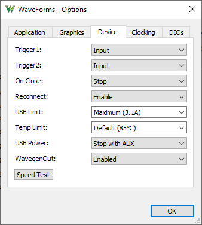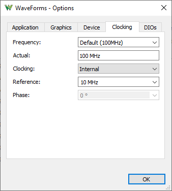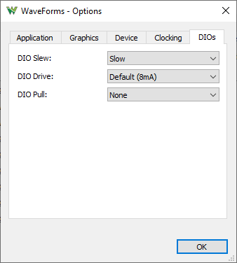
The internal clock can be scaled down and output on Trigger 1 and 2. The Trigger 1 input can be used as reference clock for the device.
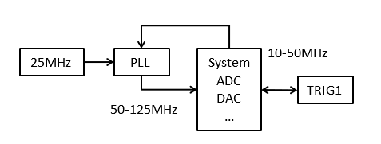
To use external reference clock:
- set Trigger 1 to be Input and provide 10-50 MHz
- set Clocking to Trigger 1 Input
- specify the External frequency
- the Phase option can be used for fine adjustment of system clock in 4-10 steps, depending on the system frequency.
To use two ADP2230 devices together:
- connect Trigger 1 and Trigger 2 between the devices
- in the WaveForms Device Manager select one of the ADP2230, press "Select + Dual" button and select the other ADP2230
- the Trigger 1 will be used for reference clock
- the Trigger 2 will be used for instrument synchronization
- Use the Phase option to have stable triggering between the devices. The optimal value depends on the specified frequencies and the used wiring.
To use multiple devices together with separate WaveForms applications, custom application or script:
- connect Trigger 1 between the devices
- on one device set Clocking to output Trigger 1 Output and on the others to be Trigger 1 Input
- configure the same Frequency and External for each device
A dedicated low-jitter PLL (CDCE6214) is used to drive the ADC and DAC.
In standalone and master mode the CDCE6214 uses a local 25 MHz oscillator, providing to ADC a clock with less than 3ps jitter in 50Hz and 20MHz range.
A PLL in the FPGA is used to generate internal clocks, and also a low frequency clock which can be adjusted between 10 and 50MHz, and optionally output on the Trigger IOs.
The device can also be used in slave mode with external reference clock of 10-50MHz applied to Trig1, bypassing the FPGA and driving the CDCE6214. The minimum input reference frequency for the CDCE6214 is 10MHz. In this mode we measured less than 4ps jitter on ADC clock relative to the reference clock.
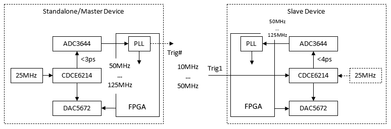
2.2 Configurations
The device has two real configurations, one with DDR-RAM and the other one disables this circuitry for lower power consumption, 3.7W vs 2.7W minimum consumption.
At least USB 3.1 Gen 1 port and cable is recommended, or USB 3.0 (SuperSpeed, 5 Gbps) and 5V DC auxiliary power supply is required to take advantage of higher speed communication. Without this, the lower power configuration with less device buffer will be used by default.
The following virtual configurations are available:
- 1. Auto (default): Automatically selects between the following two based on the available power, USB CC and 5V DC auxiliary supply presence
- 2. Low Power: disables DDR-RAM circuitry for lower power consumption
- 3. Scope WavegenPlay Logic: allocates half of the memory for Oscilloscope (128Mi samples), a quarter for Wavegen play buffer (64Mi samples) and a quarter for Logic Analyzer (64Mi samples)
- 4. Scope WavegenPlay: allocates half of the memory for Oscilloscope (128Mi samples) and the other half for Wavegen play buffer (128Mi samples)
- 5. Scope Logic: allocates half of the memory for Oscilloscope (128Mi samples) and the other half for Logic Analyzer (128Mi samples)
- 6. Scope: allocates all memory for Oscilloscope (256Mi samples)
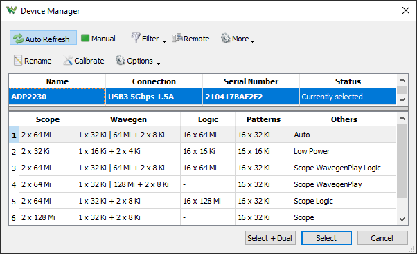
3. Troubleshooting
In case you receive the error message "Communication with device failed" or "Device configuration failed":
- Remove all the attached components and wires from the ADP2230.
- Verify that the USB cable is attached correctly.
- Reconnect WaveForms to the ADP2230 and, without opening any instruments, verify that the WaveForms system monitor is displaying voltage and current levels.
The ADP2230's system monitor displays the voltage, current, and temperature. In the main window, click the button in the status bar to show this information.
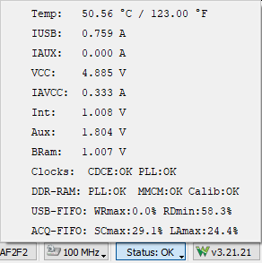
When no instrument is running, the device power consumption is around 3.8 W (750mA) with DDR RAM configuration and 2.8W (550mA) with BRAM. Depending on the usage, consumption can increase subject to the following limitations:
- The USB and AUX supplies are equipped with eFuse with 3.1 A current limitation. The devices shuts down in order to prevent damage, and the application displays the “Communication with the device failed” error message.
- See Power Supplies for information regarding limitations.
If you receive the previously mentioned error message, or if the voltage is less than 4.5 V, try the following options:
- Try to use 5 V DC 4 A power supply.
- Try to use a different USB cable and computer plug.
- Use the USB plug on the back of the PC, not the one on the front panel.
- Use a short cable, do not use a long cable or cable extender.
- Use a powered USB-hub, avoid using an unpowered hub.
- Reduce the current consumption on AWG, V+, and/or V-.
The LED on the font of the device is:
- dimly lit when powered but not active, indicating power good on the device digital rails.
- fully lit when active, indicating power good on the analog rails.
- blinking on fault, like the power supplies are in limitation.
4. Oscilloscope
The ADP2230 has two BNC oscilloscope input channels.
Specifications:
- The -0.5dB input bandwidth is at 10 MHz, -3dB @ >50MHz
- The inputs have an impedance to ground of 1 MΩ in parallel with 24 pF, AC/DC coupling.
- The ADC is 14 bits and up to 125 MSps, Texas Instruments ADC3644.
- The offset DAC is also 14 bits and has similar resolution as the capture.
- The samples are stored in 16bits format which is useful for lower sample rate and average sampling mode. This gives at 62.5/50MHz 15bit and 31.25/25MHz (or lower) 16bits resolution.
- The buffer can be up to 256 Million samples shared between the enabled channels. When no channel is enabled the two real channels capture.
- The inputs have two gain stages:
| |
Low Range |
High Range |
| Range |
<=500 mV/div |
>500 mV/div |
| Peak to peak |
5V |
50V |
| Resolution |
~300 uV |
~3 mV |
| Offset |
+4 V to -5 V |
+20 V to -25 V |
| Input |
-4.5 V to +7 V |
-45 V to +50 V |
- There are two in-device Filter (FIR) channels of size 16.
- The Wavegen channel outputs can be captured using in-device digital loopback and analog readback (of 8ms resolution) of the power supply channels.
- For Record captures longer than 256Mi samples, the streaming data over USB can work up to about 125M samples / second.
To maximize the recording rate: enable only the needed Scope channel(s), select the a device configuration with more device buffer/fifo, use a USB port on root hub which is not shared with other devices, stop or close other applications that could increase the system (CPU, memory) usage. When recording to file at higher rates use binary or WAV and 16bit format.
- For more information visit the resource center
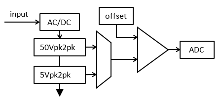
5. Arbitrary Waveform Generator
The ADP2230 is equipped with one Arbitrary Waveform Generators channel.
Specifications:
- The -0.5dB output bandwidth is 4 MHz, -3dB @ 15MHz.
- The output impedance is 50Ω
- The un-powered or shutdown device output is decoupled by a relay leaving the output with 10kΩ pull to GND and ESP protection (402ESDA-MLP1).
The relay can also toggled with WavegenOut option under Settings/Options/Device.
- The enable/disable option in the Wavegen instrument does not control the output relay but sets to output to 0V.
- The DAC is 14 bits and 125 MSps, Texas Instruments DAC5672.
- The maximum output signal swing is 10 Vpk2pk and the recommended output range is -5 V and +5 V.
- The drive current depends on the voltage level, at lest 30 mA and at most 40mA.
- The output buffer is supplied at ±10V so the output voltage can reach close to these values (offset+amplitude) but the recommended usage range is ±5V where it can provide at least 30mA.
- The DAC resolution is ~0.7 mV for amplitudes above 1 V, and ~0.18 mV for amplitudes of 1 V and lower.
- The offset is controlled by a lower speed 14bit DAC with ~0.7mV resolution with settle time of about 1ms.
- The DC signal in the Wavegen instrument uses the offset. For faster transitions the amplitude should be used, like with stopped square signal and initial output option. By default the application uses animation when selecting a preset value, which could cause output setting in steps. This can be disabled under Settings/Options/Graphics.
- The carrier buffer size is 32 Ki samples with DDR-RAM and 2 Ki with the BRAM configuration.
- The AM/PM and FM/SUM buffer size is 32 Ki samples with DDR-RAM and 2Ki with the BRAM configuration on two channels.
- The power supplies can also be used as slow AWG channels.
- The Oscilloscope inputs (raw ADC, averaged or filtered samples) can be used as source signal, amplitude or frequency modulation.
- For more information visit the resource center
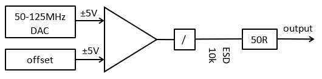
6. Power Supplies
The ADP2230 has two adjustable power supplies.
Specifications:
- The positive power supply (V+) can be adjusted between +0.5 and +5 V, and the negative (V-) between -0.5V and -5V.
- The adjustment resolution for both supplies is about 0.33mV.
- The voltage readbacks have a range of ±15V, resolution of about 0.5mV and 130ms refresh rate. Additional 8ms rate is available in Oscilloscope as Wavegen channel 2 and 3.
- The power supplies have a total power limit option that can be adjusted from 0.6 W to 15 W. The actual output power will be less than this due to losses in the regulators. The Auto option automatically sets the limit based on USB capabilities or the presence of an AUX supply.
- With high power load, specially for long period above 10W the device could overheat. In this case the device will be stopped automatically and error message displayed.
The power supplies can be used as slow AWG channels, see Wavegen channel 2 and 3.
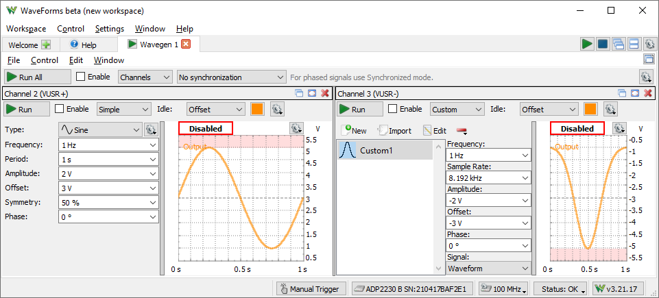
The power tree of the device contains 4 electronic fuses and several regulators.
The first 2 monitor the USB and AUX voltage and current. The USB supply is by default disabled when the AUX is supplied, see device options "USB Power".
The internal device power rails are split in digital and analog. The 3rd eFuse is internally used to enable the analog rails.
The 4th eFuse for the ±5V supplies is used as master enable switch, to monitor and set the total power limit for the user V+/- supplies.
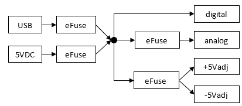
7. Digital I/O
The ADP2230 has 16 Digital I/O (DIO 0-15) and 2 Trigger I/O channels.
Specifications:
- The channels are supplied at 3.3 V, LVCMOS3V3 standard.
- The drive strength is adjustable in steps 4, 8, 12 and 16 mA; slow or fast slew rate
- Common pull option of about 200uA for all DIO and Trigger IO channels is selectable between: pullup, pulldown, keeper or none.
- The channels have a 220Ω series PTC thermistor (PRG18BB221MB1RB) and ESD diodes (DB3S406F) to GND and 3.3V, having protection between -20 V and +20 V.
- The Logic Analyzer buffer can be up to 128 Million samples / channel.
- The Pattern Generator custom buffer can be up to 32 Ki samples / channel.
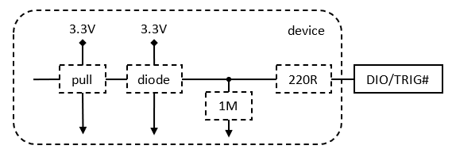